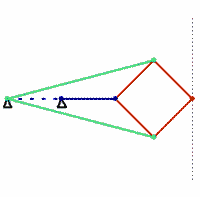

Replimat Wiki Archive
peaucellier-lipkin linkages revision 3031
20210228142025 by Tim.
Current page
History

introduction
Challenges
Approaches
References
https://en.wikipedia.org/wiki/Peaucellier%E2%80%93Lipkin_linkage